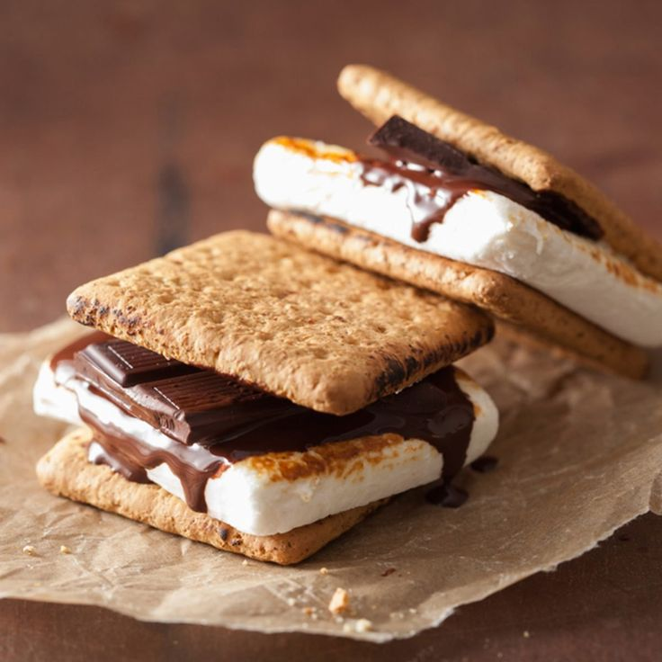

Campfire S'mores

Experience the classic campfire treat with our Campfire S'mores! Each delightful bite combines gooey melted marshmallows and rich chocolate sandwiched between two crispy graham crackers. The perfect blend of sweetness and crunch, these s'mores evoke memories of cozy nights under the stars and the warmth of crackling fires. Simple to make and impossible to resist, they’re a timeless favorite for all ages!
Ingredients
-
Graham crackers
-
Marshmallows
-
Chocolate bars
Directions
-
Prepare Your Campfire: If you’re making s'mores over a campfire, light your fire and let it burn down until you have a nice bed of hot coals. If you’re making them indoors, preheat your oven to broil or use a microwave.
-
Over a Campfire: Skewer a marshmallow on a long stick or roasting fork and hold it over the fire, turning it slowly until it’s golden brown and gooey.
-
Assemble your smores